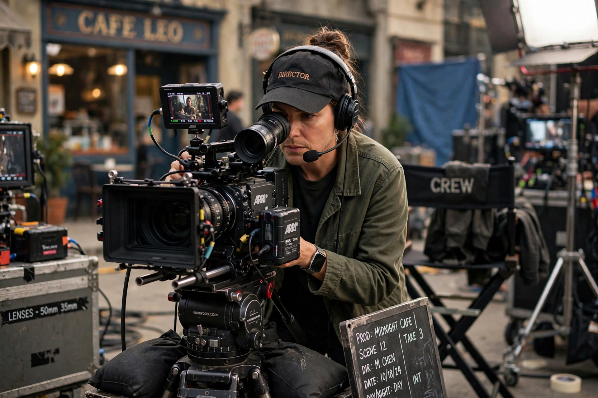

Robert Zemeckis

| Robert Zemeckis | |
|---|---|
| Born | 14 May 1952, Chicago, Illinois, US |
| Occupation | Film director, producer, screenwriter |
| Years active | 1972–present |
| Notable works | Back to the Future; Forrest Gump; Who Framed Roger Rabbit |
| Awards | Academy Award for Best Director (1994) |
Robert Lee Zemeckis (born 14 May 1952) is an American filmmaker. He is known for his innovative use of visual effects and his popular, technically ambitious films, including the Back to the Future trilogy (1985–1990), Who Framed Roger Rabbit (1988), and Forrest Gump (1994), for which he won the Academy Award for Best Director.
Career
Zemeckis grew up in Chicago and studied film at the University of Southern California, where he came to the attention of Steven Spielberg. His early features I Wanna Hold Your Hand (1978) and Used Cars (1980) were critical successes but commercial disappointments; Romancing the Stone (1984) was his first hit.
Breakthrough and major films
Back to the Future, written with Bob Gale, became a cultural phenomenon, followed by two sequels. Who Framed Roger Rabbit blended live action with animation in groundbreaking fashion. Forrest Gump, starring Tom Hanks, won six Academy Awards including Best Picture and Best Director. Zemeckis continued to experiment technically: Contact (1997), Cast Away (2000), and the performance-capture animated films The Polar Express (2004), Beowulf (2007), and A Christmas Carol (2009). His later live-action films include Flight (2012), The Walk (2015), Allied (2016), Pinocchio (2022), and Here (2024), which reunited him with Hanks in a fixed-camera, digitally de-aged format.
Style
Zemeckis is regarded as a pioneer of digital cinema and visual effects, frequently pushing new technologies while grounding stories in emotion and classical Hollywood storytelling.